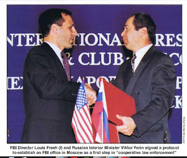

| Keebler hunting coyotes. |

Who is William Keebler, that the Regime’s secret police took such an interest in him?
A resident of minuscule Stockton, Utah (population circa 700),
Keebler, 57, earned a modest measure of media attention five years ago when he
was profiled in
a story dealing with state-subsidized coyote hunting. He also exhibited the
proper attitude toward the people who presume to rule us, which
was described by the state-aligned media as “extreme hatred” for the federal government.
Like hundreds of others from around the country, Keebler
traveled to Bunkerville, Nevada in April 2014 when Cliven Bundy called for help
in recovering his stolen cattle from the BLM. After spending about two weeks in
Nevada, Keebler returned to Utah and announced – to anyone who was listening,
which included FBI informants -- his intention to create a militia called the
Patriots Defense Force.

No man is too obscure to evade the eyes and ears of the
Homeland Security State, and no social circles, however small, are immune to
infiltration. Keebler had little by way of material means, and even
less leverage with public opinion. He still proved useful to the FBI, whose
incentive structure requires that its field operatives constantly talent-scout
people who can be cast as guest stars in the Bureau’s ongoing Homeland Security
Theater.
Attorney Stephen Downs of Project Salam, a legal
support organization for Muslims who have been lured into FBI “sting”
operations, explains
that “the government has developed a
technique of engaging targets in conversations of a somewhat provocative
nature, and then trying to pick up on things the target says, which might
suggest illegal activity – and then trying to push them into pursuing those
particular activities.”
 |
| Comrades unite: FBI and "ex"-KGB sign cooperation pact. |

For a law enforcement agency seeking to deter or
investigate crimes against persons or property, this makes no sense. It makes
perfect sense for a secret police agency seeking to identify dissidents and use
them to advance the interests of the Regime. At some
point over the last 12 to 18 months, FBI Special Agent Steven Daniels, who
presides over the Salt
Lake City-based Joint Terrorism Task Force, targeted Keebler and surrounded
him with the FBI’s entrapment elves, who are adept at cobbling together
criminal prosecutions out of the scantiest materials.
Keebler
must have thought he enjoyed a recruiting windfall as his tiny home suddenly became
crowded with attentive strangers who were eager to enlist in his militia, and
take part in “field training exercises” under his direction. The charging
document filed by Daniels makes it clear that his informant/provocateurs (referred
to as “undercover employees,” or UCFs) cultivated Keebler for more than a year:
The first reference made in the document to something Keebler allegedly said in
their presence was dated May 15, 2015.
On February
21 of this year, asserts
the probable cause affidavit, “the group talked about gathering intelligence
on potential targets.” It’s notable that the affidavit does not specify that
Keebler initiated that conversation. It does say Keebler “determined that the
group would conduct reconnaissance on a Bureau of Land Management (BLM) office
in Salt Lake.” What this almost certainly means – we can assume, on the basis
of literally hundreds of previous FBI “sting” operations – is that a
provocateur began the conversation about a recon mission, which prompted
Keebler to suggest the Salt Lake facility.
About a
month later, during a “field training exercise,” Keebler commented that “the
government had been allowed to harass people, but the repercussions were going
to start. [He] had previously said the BLM was overreaching their authority to
implement grazing restrictions on ranchers [and that] the land belonged to `the
people’ and could be used responsibly at the American people’s discretion.”

After
noting Keebler’s expression of views that are widely held by residents of the
rural West, the
affidavit claims that he expressed the desire to “target BLM facilities in
the `middle of nowhere’” and said that his militia “would sneak in and severely
damage vehicles or buildings.” One can embrace the former views without
endorsing or mandating the latter course of action, and the affidavit doesn’t
provide the conversational connecting tissue between the grievance and the
alleged expression of criminal intent.
The
omitted material would quite likely comport with Stephen Downs’ description of
the FBI’s standard procedure – “trying to
pick up on things the target says, which might suggest illegal activity
– and then trying to push them into pursuing those particular activities”
(emphasis added). Keebler supposedly asked an FBI provocateur who had “explosive
materials expertise … to build an explosive device that could disable a BLM
vehicle or damage a building” while making it clear that “he didn’t plan on
blowing people up for now….”
Two weeks later, the FBI provocateur showed Keebler “a video
of a 6-inch pipe bomb blowing up some abandoned office furniture in the
mountains of southern Utah.” Keebler’s reaction was to ask about the
provocateur’s ability to make more explosive devices.” The snitch replied that “he
could provide … more explosive devices” if necessary.
Keebler, the
affidavit asserts, “stated he had a target in mind: the BLM building
located at Mount Turnbull in Arizona. [He] had conducted reconnaissance on the
BLM facility in Arizona in October, 2015, with Lavoy Finicum. A [militia]
member/UCE who was accompanying Keebler at the time took pictures of the BLM
facility in Mount Turnbull.”

Note carefully what the document doesn’t claim – namely,
that either Keebler or Finicum traveled
to that isolated, abandoned BLM facility in October of last year for the
purpose of planning a bombing. Also noteworthy is the fact that the provocateur
is the one who cased the building by photographing it. Without a
contemporaneous statement from either Keebler or Finicum, there is no
foundation for depicting that visit as part of a “plot” which didn’t take form,
according to the affidavit, until May 14 of this year, when Keebler allegedly
selected the Mount Turnbull facility as a target.
This came after Keebler had been carefully guided by the FBI’s
playacting provocateurs for at least a year.
Two bombs were constructed by the FBI’s undercover asset,
one to be placed against a cabin owned by the BLM, and the other supposedly “to
be used against law enforcement if they got stopped while driving to or from
Mount Turnbull.” Again, the affidavit does not explicitly cite Keebler as the
source of that tactical suggestion. When Keebler and the FBI operatives drove
to the site on the night of June 21, someone – the affidavit doesn’t specify
who it was – placed the dummy bomb against the door of the vacant cabin.
Keebler was handed a device described as a detonator, which he pushed several
times. He then departed for Utah, where he was arrested several hours later.
The entrapment network that snared Keebler is still active
in Utah, most likely targeting other critics of the BLM and activists outraged
by the
FBI-orchestrated ambush in which LaVoy Finicum was killed last January. (It
should be remembered that the charging affidavit in Keebler’s case documents
that Finicum had been the subject of FBI surveillance long before last winter’s
protest occupation in Oregon.)

One week before the FBI provocateur showed Keebler footage
of his pipe bomb test, Keebler and several members of his “militia” were in
attendance at an April 1
event in Orem, Utah featuring speeches by Finicum’s widow, Jeanette, and
Shawna Cox, who was a witness to Finicum’s extra-judicial killing. That event
was attended by hundreds of people whom the Feds would characterize as “anti-government
extremists,” and the most notable souls among America’s founders would describe
as “good company.”
“Some people who were with [Keebler] were videotaping all of
the speakers with very expensive, professional-grade equipment,” a Utah
broadcaster who was present told me. The grim-faced people reportedly scanned
the room, taking note of everybody in attendance. The
FBI’s assets doubtless were scouting out prospects for use in their next
Homeland Security Theater production.
Special Agent Daniels is a practiced hand at arranging such
spectacles. Four years ago a
“confidential human source” in Provo overheard an unremarkable man named Keith
Max Pierce saying some nasty things about the pitiless parasites and
extortionists employed by the terrorist entity called the Internal Revenue
Service. Daniels spun up the
machinery of entrapment, which eventually manufactured a
headline-worthy claim that Pierce had been plotting to bomb various government
facilities and assassinate several members of our permanent criminal class,
sometimes referred to as members of Congress. The terrorism allegations,
however, were never part of the formal charges filed against Pierce – and the secret police refused to explain
why.

“This is a guy who is talking … and says some things that
are stupid to say,” protested Pierce’s hapless public defender after the FBI
arrested the patsy in July 2013. The attorney planned to mount an entrapment
defense. The Feds obviated the need for prosecution by holding Pierce for more
than a year in pre-trial detention, breaking his will to resist by giving him a
foretaste of the decades of misery he would experience if he actually challenged
the charges in
a system rigged to produce a conviction.
Pierce
accepted a plea agreement in which he will serve two years in prison for a
single charge of possessing a machine gun. He will also receive mandatory “mental
health treatment” – a Sovietesque touch reflecting the conceit that only the
deranged would resent the behavior of those who presume to rule us.
Keebler’s case will probably follow a similar trajectory –
and Special Agent Daniels, fortified by these agitprop triumphs, will continue
to trawl Utah for other potential victims.
This week's Freedom Zealot Podcast is also about the Keebler entrapment case:
Dum spiro, pungo!
Dum spiro, pungo!